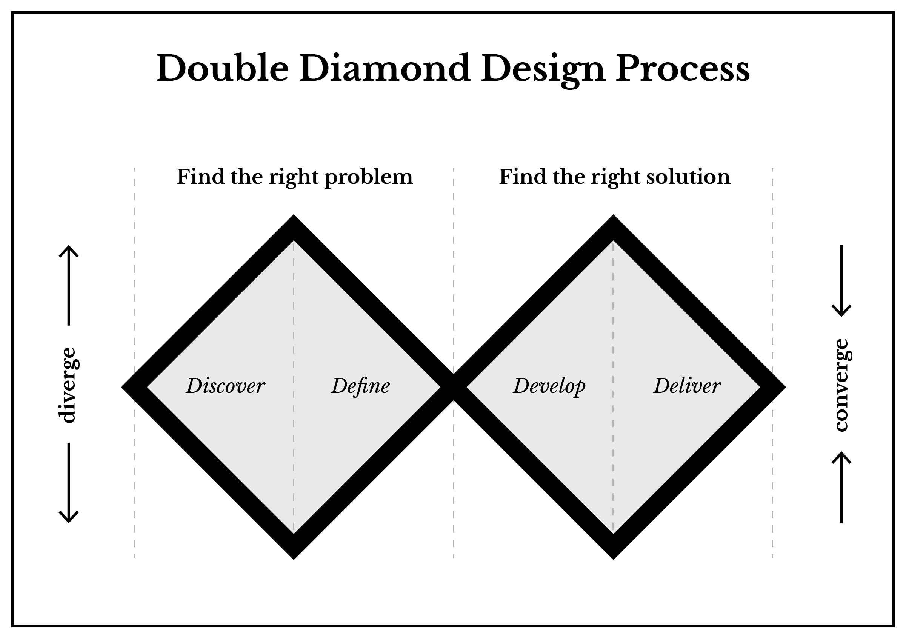
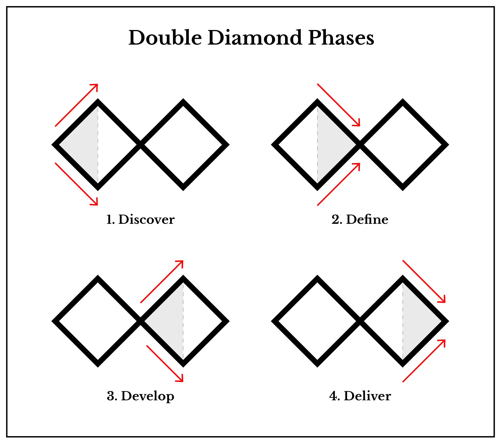

Design process
Depending on the industry a person works in, a set of contemporary best practices will be in fashion. If you don't know where to start, identifying, learning, and practicing those established guidelines makes good sense. If you are a seasoned designer, then adapting a process according to your own experiences is prudent, and something you would be used to doing. Innovating on an existing design process from the very start may be more inhibiting than helpful.

In this course, we will be adapting and simplifying a design process model called the Double Diamond, originally created by the British Design Council, and reimagined by Dan Nessler. The shape of a two-dimensional diamond is meant to be visual analogy describing the divergence and convergence of ideas. Read from left to right, you would use divergent thinking methods to create an array of possibilities, and then use convergent thinking methods to arrive as a specific outcome or decision.
Divergent and convergent thinking
Divergent thinking refers to the thought processes that are used for producing an array of ideas that may be quite different from each other. This kind of thinking is meant to generate an abundance of possibilities to increase the likelihood of a positive outcome. Creative thinkers are particularly skilled divergent thinkers, drawing inspiration from unexpected sources and keen observations.
Convergent thinking refers to the thought processes involved with resolving an idea or solution. A convergent thinking will analyze an idea's viability with respect to available resources, capabilities, human-factors implications, environmental considerations, cost, efficiency, and many other metrics. Engineers tend to excel in convergent thinking, choosing the best options from set of possibilities.
The Four Phases

On the Double Diamond Phases diagram, you can see how two connected diamonds describe four phases, two divergent, and two convergent. The red arrows pointing away from each other represent divergence whereas the red arrows pointed towards each other represent convergence. In the left-most diamond, you would establish an understanding of the prompt and a solution plan. In the right-most diamond, you would construct the response to the prompt. Each diamond is divided into two parts, creating four design phases which we will refer to throughout course projects.
The (1) Discover phase is where you will gain a better understanding of the project and its goals; the (2) Define phase is where you will narrow and form the project's direction; the (3) Develop phase is where you will explore production methodologies, prototype, and experiment; and finally the (4) Deliver phase is where you will iterate and refine your project. This process model will be used to complete projects with an added discussion phase at the end. Though this process is not necessarily a linear methodology, we will be progressing through projects in a linear fashion.
At any given part of this process, you may be asked to give form to the work you are doing. You should be prepared to communicate progress verbally and visually, giving equal importance and attention to in-process work as is given to the final product.
1. Discover
The discovery phase is all about questioning and researching. To better understand the nature of a problem later in the process, it is helpful to gather as much raw information and data as possible.
Research
Almost any design process will have some research component. Qualitative research refers to open-ended and unstructured research that can be obtained through interviews, surveys, questionnaires, observation, and exploration. This type of data is descriptive and more difficult to analyze. Quantitative research deals in data that is measured and tends to be easier to process. Correlations, causal relationships, and trends interpreted from findings are subject to the researchers bias and assumptions.
Ethnographic research is concerned with learning about how people live their lives, and ethnography techniques are often used in human-centered design. You can obtain this by doing field work, a kind of primary research where you make observations, conduct interviews, and more, or by doing secondary research which typically involves book or Internet searches for existing information.
2. Define
With research completed, you can now focus on identifying underlying themes and forming concepts. The end of this phase usually culminates in a How Might We (HMW) question, where the end-goal of the project then becomes trying to answer the question.
Articulating the true nature of a problem in this phase helps ensure that the design process is genuinely concerned about the presented or generated issue, and serves as inspiration for the rest of design process.
3. Develop
In this phase you think of an array of possible ways to solve for the project goals worked out in the Define phase. You use design thinking strategies, prototyping, storytelling, and other methods to identify as many ideas as you can.
4. Deliver
In this phase, you build, test, and iterate a solution. Maintaining an open dialogue and getting feedback is important to ensure the work as as good as it can be. At the end of this phase, you are able to make an assertion or provide a functioning or complete solution.